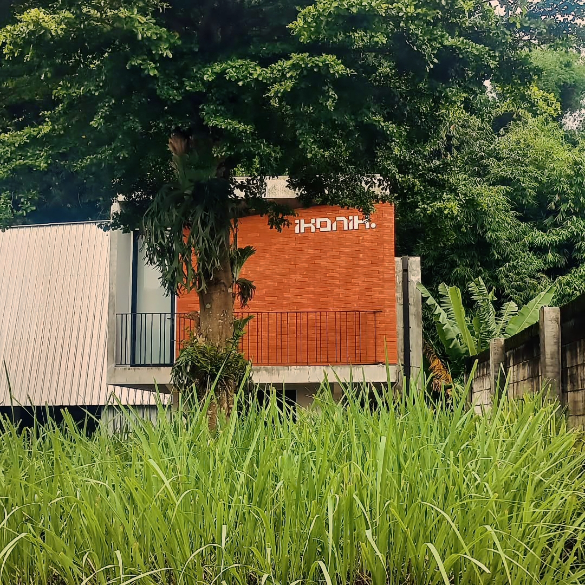

INTERIOR • KONTRAKTOR • ARSITEK

Merancang ruang yang bermakna.
Membangun dengan ketelitian.
TENTANG KAMI
HALO, KAMI
DARI IKONIK
IKONIK adalah jasa kontraktor, arsitek, dan desain interior di Malang. Kami membantu mewujudkan hunian, kantor, dan ruang komersial—mulai dari perencanaan desain hingga pembangunan dan pengerjaan interior.
Jelajahi proyek

PILIHAN LAYANAN
PEKERJAAN
KAMI
- 01Arsitektur & Gambar 3D
- 02Kontraktor Bangun & Renovasi
- 03Interior & Custom Furniture
WORK EXPERIENCE
REKAM
JEJAK
Pengalaman lapangan kami mencakup bangunan komersial, area konstruksi, renovasi eksterior, dan pengerjaan interior. Setiap proyek dimulai dengan ruang lingkup yang jelas dan komunikasi yang terbuka.
Jelajahi proyek